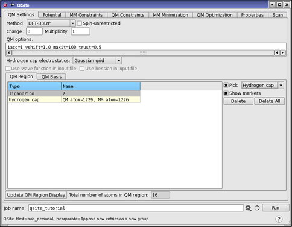
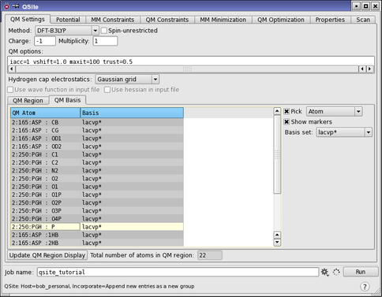

| Features | Links |
Use this tab to enter information for the quantum mechanics (QM) calculation, and to define the region to be treated quantum-mechanically.
The QM information includes the QM method to be used, the charge and spin multiplicity of the QM system, and other keywords and options that may be required by Jaguar. For more information on Jaguar options, see the Jaguar User Manual.
The QM region is defined using any of the following methods:
QSite cuts are specially parametrized frozen-orbital boundaries between the QM and MM regions. They can be placed between an alpha carbon and a side chain (side-chain cuts) or between an alpha carbon and the backbone to one side (backbone cuts, which must be made in pairs to add the residues between them to the QM region).
Cuts in a protein-ligand complex must be between atoms in peptide residues. Covalently-bound ligands can be included in the QM region when defining cuts, but only along with attached protein atoms. The QM region must extend at least as far as the first permissible cut between protein atoms.
Hydrogen caps can be placed on any atom designated to be in the QM region, provided that it is singly-bonded to an atom in the MM region. This option offers much more flexibility in the selection of the QM region. The MM atom is replaced with a hydrogen atom in the QM calculation.
If you have a metal in the structure it should either be added to the QM region, or it should be frozen in the MM region along with its ligands or ligand residues.
See Rules and Procedures for Creating the QM/MM Boundary for more detail.
The QM Settings tab contains a set of general controls, and two subtabs.
The general settings at the top of the panel define the type of QM calculation to perform.
The options for the QM method include several density functional theory methods (DFT-B3LYP, DFT-PWB6K, DFT-M06, DFT-M06-2X, DFT-M06-L, DFT-M06-HF, DFT-M05, DFT-M05-2X), Hartree-Fock (Hartree-Fock), local Møller-Plessett perturbation theory (Local MP2), and several semiempirical methods of NDDO type (RM1, AM1, PM3, MNDO, MNDOd). The DFT-User defined option is selected when an input file is read that specifies a functional other than those available from this menu. Otherwise this option is not available.
If you choose the Hartree-Fock method or a DFT method for a closed-shell system, you can calculate excited states with the CIS or the TDDFT method by including the relevant keywords from TDHF and TDDFT Keywords In The Jaguar Input File in the QM options text box or the input file. This can only be done for a QM region defined with hydrogen caps or defined by a ligand.
For more information on QM methods, see the Jaguar Panel topic or the Jaguar User Manual. Details of the DFT methods are available in Density Functional Theory (DFT) Settings. For more information on the semiempirical methds, see the Semiempirical NDDO Guide.
Select this option to perform a spin-unrestricted open-shell calculation. This option is only available with the Hartree-Fock and DFT-B3LYP methods. Otherwise, open-shell calculations will be performed with the restricted open-shell methods.
This is the net charge of the QM region of the system. Maestro updates the Charge to a reasonable value whenever a new residue or ion is added to the QM region; if a discrepancy appears, edit the value. If this value does not match the sum of the formal charges of the atoms in the QM region, Maestro displays a warning message, but allows you to proceed.
This text box displays the spin multiplicity of the QM region of the system: 1 for singlet, 2 for doublet, etc. Edit the value if necessary. If there is a discrepancy between the total charge and the multiplicity, the Jaguar calculation halts with an error message. The charge and multiplicity of the QM region must be consistent.
This text box can contain any Jaguar keywords such as print settings, non-default convergence criteria, and so on. Each such option is of the form keyword=value (with no embedded blanks). Multiple keyword/value pairs can be specified, separated by one or more blanks. By default, the following QM options appear in the box:
iacc=1 vshift=1.0 maxit=100
You can remove or modify these options as appropriate. See The Jaguar Input File for more information on Jaguar keywords.
This option menu allows you to choose how atoms in the MM region in the vicinity of a hydrogen cap are treated when calculating their electrostatic interaction with the QM region. It is only available when you are using hydrogen caps to define part or all of the QM region.
These options allow you to read the wave function and the Hessian from the input file, and make use of them in the calculation. This capability is particularly useful when restarting a calculation.
Not available for semiempirical methods.
In this subtab, you set up the QM region. The total number of atoms in the QM region is displayed below this subtab. To define the region, choose a type of cut from the Pick option menu, and pick atoms to define the cut. If you want to delete a cut, select it in the table and click Delete. To start over with the selection of cuts, click Delete All.

The cuts that define the QM region are listed in the table. The Type column gives the cut type, and corresponds to the choice made from the Pick option menu to define the cut. The Name column identifies the cut:
QM atom=number, MM atom=numberWhen you have finished picking to define a cut or a set of QM atoms, table rows are added for each cut or atom set.
Select this option to pick the location of one or more cuts, and choose the type of cut from the option menu. Note that a residue can be an amino acid residue, a free ligand or solvent molecule, or an ion.
Choose this option to add only the side chain of an amino acid residue to the QM region, leaving the backbone in the MM region. Pick an atom in the side chain you want to include. The side chain is marked with ball and stick markers in sienna if Show markers is selected. A cut is made between the alpha carbon and beta carbon of that residue. All of the atoms in the side chain are included in the QM region.
Side-chain cuts can be made in any peptide residue other than alanine (ALA), glycine (GLY), and proline (PRO). (To incorporate these side chains in the QM region, you must use backbone cuts and include the entire residue.) Side-chain cuts can be made in positively-charged histidine (HIP) as well. Side-chain cuts are not permitted if the side chain has been modified within 3 atoms of the alpha carbon atom.
Not available for semiempirical methods.
To add entire amino acid residues to the QM region, choose this option and then pick two backbone atoms that are not alpha carbons and are at least three backbone bonds apart. The residues containing these two atoms and the residues in between are included in the QM region. The cut between MM and QM atoms is made between the alpha carbon and the backbone atom bonded to it. When you pick the first atom it is marked with a purple cube. After picking the second atom, all of the backbone and side chain atoms between the two cuts are marked in sienna (if Show markers is selected). If you click twice on the same atom in an amino acid residue, then the QM/MM cuts will be set as small as possible so as to place that entire residue in the QM region.
Backbone cuts can be made in any peptide residue, including glycine, proline, and their adjacent residues, and including positively-charged histidine (HIP). An exception is that backbone cuts on PRO residues cannot be made between the N atom and the Ca atom.
There must be at least 3 bonds between pairs of QM-MM cuts that are made along the protein backbone. This ensures that the QM/MM boundaries are kept far enough apart that they do not interfere with one another. This means that the smallest QM region that contains all of the atoms of an amino acid residue would necessarily contain an extra carbonyl group and an extra N-H bond from the neighboring residues.
A backbone cut cannot be placed between an amino acid residue and an end cap. The end cap must be included in the QM region. To do this you may click on any atom in an end cap, and on any other atom in an amino acid residue further up the chain. In this case only one cut will actually be made, and all atoms from the cut to the end of the chain will be placed into the QM region.
The cuts made with this choice use the frozen-orbitals method for defining the terminus of the QM region.
Not available for semiempirical methods.
Entire free ligands, metal ions, or other species not covalently bound to the protein can be added to the QM region by this method, which does not make any cuts between atoms. Choose this option, then pick a metal ion or an atom in the ligand molecule to add it to the QM region. Molecules are marked in sienna, and single atoms or ions are marked in cyan, if Show markers is selected.
Ligands that are covalently bound to the protein cannot be added using this method, because this method does not make parametrized cuts between bonded atoms. To add covalently-bound ligands to the QM region, make either a pair of backbone cuts to select the residue to which the ligand is bound, or make a side-chain cut.
Note: If the structure contains a metal atom, it should be either included in the QM region or it should be frozen, if it is in the MM region, along with its ligands or ligand residues.
To define cuts that are capped by hydrogen atoms rather than atoms with frozen orbitals, choose this option and then pick the QM atom followed by the MM atom on either side of the cut. The QM atom and the MM atom must be joined by a single bond. The MM atom is replaced by a hydrogen atom in the QM calculation. The QM region usually requires two or more cuts. The markers in the Workspace are not updated after making this kind of cut. Instead, you must click Update QM Region Display to display the markers for the QM region (provided Show markers is selected).
Once you have created a hydrogen cap, the Hydrogen cap electrostatics option menu in the general section becomes available, and you can choose the electrostatic treatment of MM atoms near the cap.
If this option is selected, markers are displayed in the Workspace to indicate the QM region. Ball-and-stick markers are superimposed on the QM region atoms. The markers are colored sienna. The markers that correspond to the selected rows in the QM region table are colored cyan. For hydrogen caps, an arrow is superimposed on the bond where the cap will be placed, pointing to the MM atom that will be replaced with a hydrogen atom.
To remove atoms from the QM region or redefine cuts, select the rows in the QM region table and click Delete. Take care to ensure that the resulting QM region is consistent with any backbone cuts that have been made.
To clear the QM region definition, click Delete All.
In this subtab you can view and change the basis set associated with each atom in the QM Region. This subtab is not available for semiempirical methods.

This table lists the basis set used for each QM atom. The atom is identified in the QM Atom column, and the basis set used is given in the Basis column. You can select multiple rows and apply a basis set to the selection.
Select this option to pick atoms for which you want to change the basis set. Three of the options on the menu are the same as in the QM Region tab, and work in the same way. The Hydrogen cap option is not present; instead there is an Atom option that enables you to pick individual atoms. The atoms you pick are marked with green axes if Show markers is selected, and they are also selected in the basis set table.
When this option is selected, the atoms that are selected in the table or picked are marked with green axes.
Choose the basis set for the selected rows in the basis set table from this option menu. By default, the basis set used for the entire QM region is LACVP*, which uses 6-31G* for non-transition metals. This is the basis set used in the parameterization of the frozen orbital cuts.